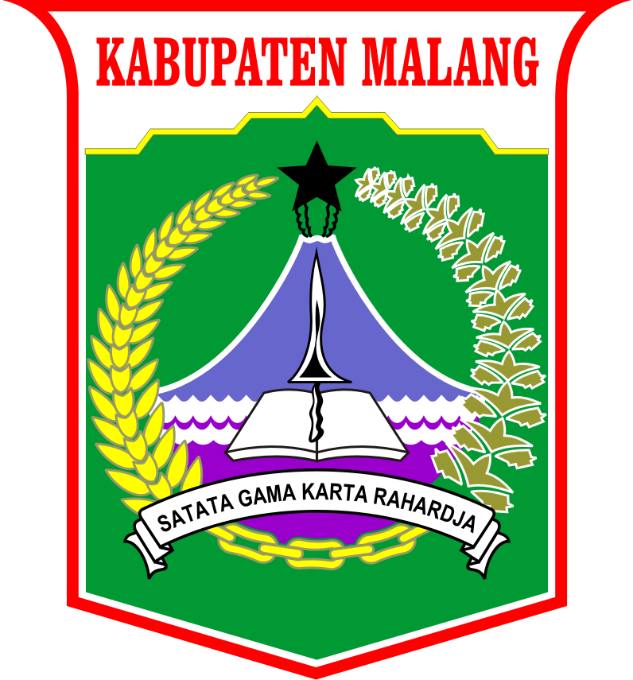
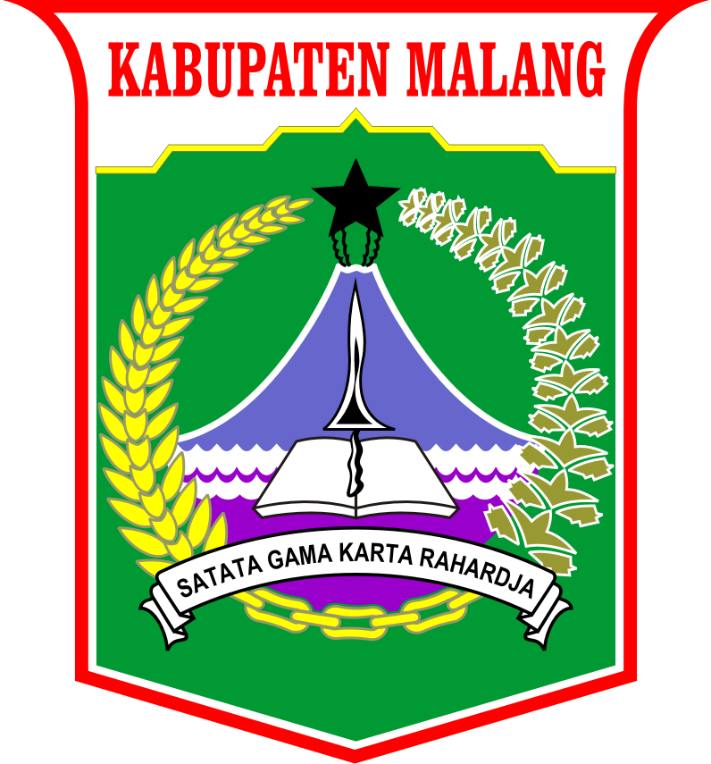
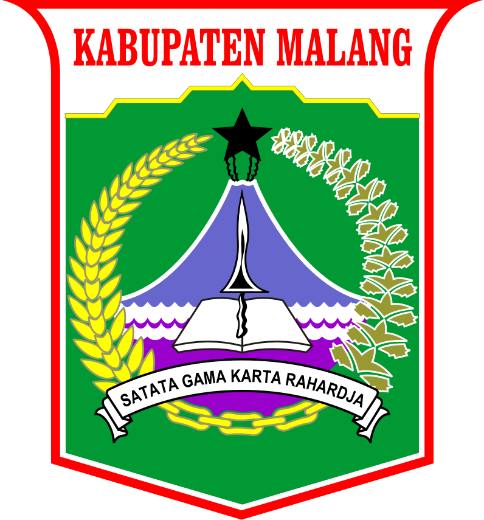

SMP NEGERI 4 KEPANJEN
Jl. Kawi No.3, Kepanjen, Malang, Jawa Timur 65163 (0341) 395013 info@smpn4kepanjen.sch.id

Jl. Kawi No.3, Kepanjen, Malang, Jawa Timur 65163 (0341) 395013 info@smpn4kepanjen.sch.id

Organisasi Siswa Intra Sekolah (OSIS) adalah suatu organisasi yang berada di tingkat sekolah di Indonesia yang dimulai dari Sekolah Menengah Pertama (SMP) dan Sekolah Menengah Atas (SMA). OSIS diurus dan dikelola oleh murid-murid yang terpilih untuk menjadi pengurus OSIS.

Patroli Keamanan Sekolah atau dapat disingkat PKS adalah salah satu jenis kegiatan ekstrakurikuler yang umum ditemui di sekolah-sekolah. Tugas PKS Membantu tugas Patroli dalam menyelenggarakan pengaturan Lalu Lintas di jalan raya/umum disekita lingkungan sekolah.

Dega atau bisa dikenal Dewan Galang ialah organisasi dalam Pasukan Penggalang yang beranggotakan para pemimpin regu. Organisasi ini dikhususkan untuk melatih siswa yang minat terhadap aktivitas kepramukaan dan membangun jiwa kepemimpinan siswa.

Palang Merah Remaja (disingkat PMR) adalah wadah pembinaan dan pengembangan anggota remaja PMI, yang selanjutnya disebut PMR. Para anggota PMR juga diberikan tugas khusus yaitu bersiap di barisan belakang saat ada siswa yang membutuhkan pertolongan pertama saat upacara bendera atau acara khusus lainnya

NOS adalah singkatan dari News Of Spanega. Tugasnya adalah meliput berbagai acara serta aktivitas yang berhubungan dengan sekolah. NOS juga menghadirkan sebuah majalah tahunan yang berisi rangkuman kegiatan selama satu tahun kebelakang dan juga menjadi wadah siswa untuk menuangkan karya mereka agar bisa dikenal lebih luas.